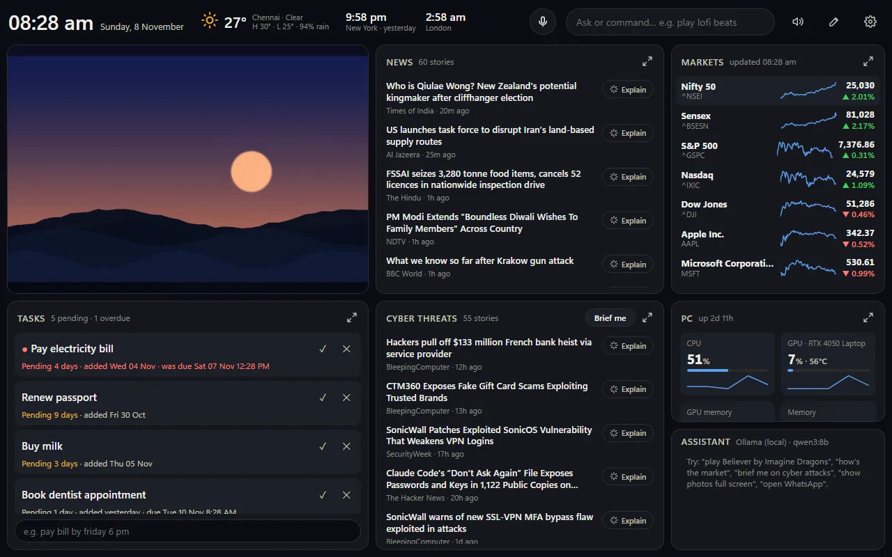

AIVoice Dashboard
A hands-free dashboard for a second monitor: voice control, local AI, and a task list that sends alerts to your phone through Telegram. Version 1.0.0 is out as a Windows installer, voice included.
- Voice control
- Local AI
- v1.0.0 installer